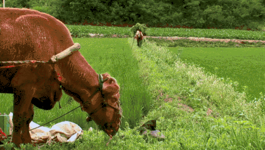

“这是我父亲日记里的文字
这是他的青春
留下来的散文诗
多年以后我看着
泪流不止
我的父亲已经老得像一个影子”
“在这个世上活着哪有轻松可言。”
纵使人生的底色是悲凉，也总有温暖能照亮岁月。
多年前，韩国电影《牛铃之声》上映，感动了300万观众。
影片讲述了一头老牛和一对迟暮老人的生活。
正常的牛，寿命只有十五岁，这一头却活了四十年。
导演李忠烈说，拍摄之前他曾打算自杀，但拍完后，他再也没有这种念头了。
他跟拍三年，最终将影片浓缩为79分钟，道出了许多人用尽一生方才领悟的道理：
“不要问活着的意义是什么，活着本身就是意义。”
01
影片的主角是三个衰老的生命。
老人崔益钧，妻子李三顺，还有一头陪伴了他们40年的老黄牛。
八岁那年，崔益钧患上脚疾，此后，无法像正常人一样行走。
即便如此，老人依旧每天清晨驾着牛去田里耕种，傍晚再赶着牛回家，无论日晒雨淋，几十年如一日。
老人的一辈子，也就囿于这片土地：吃饭、睡觉、耕地。
当地有一种说法是：牛如果不干活，五年就死了。
老人的想法很简单，要一起活着，就要一起劳作。
“就算要死在田里，也要继续工作。”
他们一起在水田里耕种，老黄牛走在前面，深一脚浅一脚，缓慢得几乎下一步就会跪倒；
老人弓着身体跟在后面，瘦骨嶙峋的小腿颤颤巍巍。
他笑着说：“我要是他（牛）我早就不活了。”
其实，老人不舍得累坏他的老朋友。
在田地里，常常是，他撑着拐杖躬身忙碌，老牛反而在田边吃草休息。

老人用手轻轻地抚摸黄牛的脊背，静静看着它，好像从它那双浑浊的眼里，能看到自己是如何衰老的，能望见自己这一生的模样。
“这头牛是他的事业。”只有妻子明白丈夫对老牛的深情。
妻子曾提议在田里喷些杀虫剂，不然植物被虫子糟蹋收成不好。
他却坚持不喷。
老人固执地认为，这样那头牛会活不成。
每次和别人谈及自家的牛，他总是非常骄傲地说，这头牛有灵性，虽然走得慢，却知道能躲开车辆。
有一次老人赶着牛车去拉柴，在车上不小心睡着了，等他醒来，老牛已经驮着他和柴火平安到家。
“对我来说，他比人更好。”
可是，这头牛实在太老了，医生说，老牛只能再活一年。
老人只当是玩笑话：“不，这不是真的。”紧接着，一脸悲伤。
别人问他要怎么办，卖掉？杀掉？
老人手足无措地站在原地：“就继续养着，直到他死为止。”
但老牛的脚步还是越来越沉重。
老人的病也越来越重。
最后他没有承受住身边人的压力，把牛牵去市场上卖。
因为年老，牛并不值钱。
有人愿意出一百五十万韩元，老人摆摆手：
“除非你给我五百万元。”
周围的人都嘲笑这个老头儿，“你当别人是傻瓜吗？”
老人当然知道这么高的价格卖不出去，只有这样，这头牛才暂时不会离开自己。
有人大声说，就算把这头牛宰了，它的肉老了，也没人会要。
周围的人发出哄笑。
老人低着头扭着纤绳，大声说：“我不卖了。”
在别人眼里，这头牛是连作为供人食用的“肉”都没资格的。
在老人心里，这头老黄牛就是另一个自己。
老牛走起来已步履蹒跚
最后站也站不起来
老人孤零零地站在牧场里，不知道该去哪里，他身边的老牛仿佛看到了自己的结局，从垂老的眼睛里，流出了泪水。
最终，老牛还是因衰老离开了。
两位老人看着牛被埋葬
老人低头懊恼地自言自语：“我怎么做它都站不起来。”
他埋了自己几十年的老伙伴，在老牛的坟上，倒上了他最爱喝的米酒，和妻子跪在寺庙前，为它祈祷。
老人曾说过：“有一天，我和它会一起死去。”
就在老牛离开后的那个春天，他的身体愈发得坏了。
他不再下地劳作，总是呆呆地枯坐屋下，手里拿着曾系在老黄牛脖子上的铜铃。
导演问：“你在想它么，那头牛？”
老人回答：“是啊，不管他是人还是畜生，我都想他。”
02
相比老人的寡言，妻子李三顺的话更多些。
镜头里，她似乎无比嫌弃那头牛。
因为老伴不愿意喷杀虫剂，一把岁数的她只好在田地里闷头锄野草。
她埋怨丈夫：“我要受这么多的苦要这样地割野草，只是因为嫁错了郎！”
李三顺的一生是个再寻常不过的故事：18岁时，她嫁到这个山村，从那以后，种地锄草、生儿育女，没有一天不是劳碌着的。
两人跪在田里劳作
和她一起过了大半辈子的老头，对着她沉默寡言，说起自己的牛来却像打开了话匣子。
好像自己活了这么久，还不如一个畜生，“他整天就想着那头牛！”
但也只有她懂得老人的固执。
虽然嘴上埋怨不断，还是耐心准备老牛的饲料。
老牛和他们吃的几乎一样。
老人不愿用机械耕田，她就每天陪他赶牛车，面朝黄土，劳碌一天。
大多数时候，他们各自在田里劳作，少有言语，就这样相依相伴了一辈子。
妻子看到老人头痛到站不起身，她对老人喊道：“卖掉吧。”
嘴里嘟囔着自己不愿再喂它，“你不要再给我添麻烦”，眼睛却望着丈夫，满是无奈和担忧。
老人生病时，她坐在病床前低声对老人说：“我真的很担心，很担心……你要是死了，我干脆也跟着你去吧。”
看到丈夫笨拙地拍打坏掉的收音机，她笑着调侃：你也是，是时候要死了。
陪着老头去医院看病，从医院出来后，两个人难得拍了一张合照。
照片上的两个人肩并着肩，有点局促不安，露出木讷的微笑。
对那只牛，她嘴上嫌弃，其实和老人一样割舍不下。
老牛临死前，她看着堆满院子的柴火喃喃自语：“我敢说韩国没有一头牛能像他那样，一辈子背了这么多柴。
真的感谢他，让我的老头儿，有这么多柴可以用。”
老牛去世后，她心里的难过并不亚于老伴。
“你为什么这么早就走了？”
“你可以等我们一起离开这世界。”
相守一生，老奶奶早已和丈夫活成了一个人。
她害怕老头离自己而去，老头害怕自己的牛死去；
老人守着这头牛，老奶奶守着丈夫，老牛守着老两口，他们好像同一个生命的三个分身。
在这个几乎被遗忘的小山村，三个暮年的生命平静地相依相守，很少言语，却惺惺相惜。
好像一直静静地等待死亡，又无时无刻不在认真地活着。
03
和老黄牛相依为命的老两口，其实有9个子女。
老人的病越来越重，住在城里的孩子们开着小汽车，回家探望。
他们在小院里烤肉谈笑，老人和妻子则默默坐在屋檐下。
儿子笑道：“这头牛赚钱供我们读书，我们应该感谢他付出的劳力，造就了今天的我们。”
儿女们觉得，父亲一直在田里劳作，才会病得越来越重，“身体继续变坏，让我们担心，我们也没法集中精力工作。”
孩子们劝父亲，是时候把那头牛卖掉了，“我们会给你钱的”。
蜷在一边的老人，缓缓抬起头，眼神迷茫又混沌，就像儿女们嘴里的那头老黄牛，“老迈、卑微、可怜”。
老黄牛曾驮着一家的生计，而当它再也没力气干活，就该卖掉了。
老人的子女们看不出，他们的父亲，就像那头老黄牛。
为了家庭，无数次扛起重担，耗尽了力气，奉献了一生。
直到衰老还不停下劳作，只是不希望变成一个没用的人，不想成为一个只有养好身体、不给子女添麻烦，才算有价值的老人。
妻子曾对老人吐露自己的担忧，“你死了，我怎么能独自生活。”
她不愿意和孩子生活在一起，“若是我老是放轻脚步来走路，我情愿死了算。”
身处壮年的子女们，忙着应付自己热闹的人生，不懂衰老对一个人而言，有多么沉重。
老奶奶说，小牛吃奶的时候才会和母牛在一起，除此之外，小牛不会和母牛在一起的。
当小牛离开了，母牛还是会留在原地等待自己的孩子。
即使几个子女衣食无忧，老两口每年还是会把庄稼绝大部分的收成分好，送给他们。
而当子女们长出了翅膀，飞向自己的天地时，却常常忘记曾经健壮的父母亲，已经老得像一个影子，他们拖着衰老的身体劳作，不只是因为生存，而是为了保留生活的尊严：
活着，用自己的双手，活着。
04
在《牛铃之声》里，两个老人从不避讳谈及“死亡”这个话题。
不管是牛的死亡，还是关于自己。
别人问老人，“他（牛）死了你会怎么办?”
老人非常认真地说，“我会主持葬礼的。”
在看似平静的镜头下，其实一直掩藏着关于“生死”的沉重思考。
纪录片的导演李忠烈，在拍摄之前，曾想过自杀。
因为作品不被外界认可，他陷入自我怀疑，在痛苦的泥潭中长久挣扎。
妻子受不了这种缺乏安全感的生活，带着女儿离开了他。
李忠烈心灰意冷。
这时，有位朋友敲开了他的门，给他介绍了一头牛和一对老人。
《牛铃之声》的投资者，预想的拍摄周期是一年，直到老牛过世。
但没想到，被医生判定“只剩下一年寿命”的牛，硬是活了三年。
制作成本暴增，投资者、摄影师、录音师都退出了拍摄。
到最后，李忠烈身兼数职，一个人扛着摄像机，背着录音机，完成了拍摄。
拍完纪录片后，他再也没有了自杀的想法，他说：“老爷爷和牛，像药一样治愈了我的自杀倾向。”
被治愈的人不止导演，这部投资仅200万人民币的电影，感动了整个韩国。
影片刷新了韩国独立电影的最高票房纪录，斩获第13届韩国釜山电影节最佳纪录片奖。
成为改变韩国纪录片历史的经典之作，安慰了无数徘徊在繁华都市里，找不到生存意义的心灵。
许多人在电影院里流着泪，想起了奉献一生、业已老迈的父母，想起了记忆中的田园鸟鸣和回不去的故乡。
某种意义上，“人是为了活着本身而活着，而不是为了活着之外的事物而活着。”
就像影片中的老人和那头老黄牛，在日出而作、日落而息的生活里，彼此守护着无需言说的温情。
“人生在世多艰磨”，我们能做的就是接受生活赋予的责任。
能挽留无情岁月的，只有对生活本身的热爱，和漫长日子里，那份不离不弃的爱和守护。
![Scan me!]()